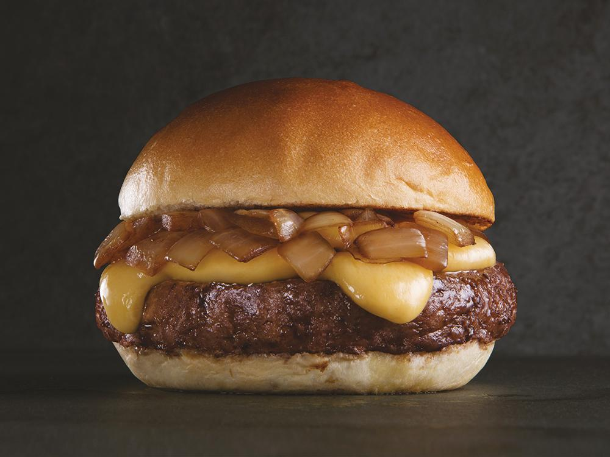

Slick ! (with jQuery)
In this page, used two libs: Slick, for responsive and easy carousel, and jQuery. The carousel shows the burguers on the main dish.

Chicken sandwitch

In this page, used two libs: Slick, for responsive and easy carousel, and jQuery. The carousel shows the burguers on the main dish.